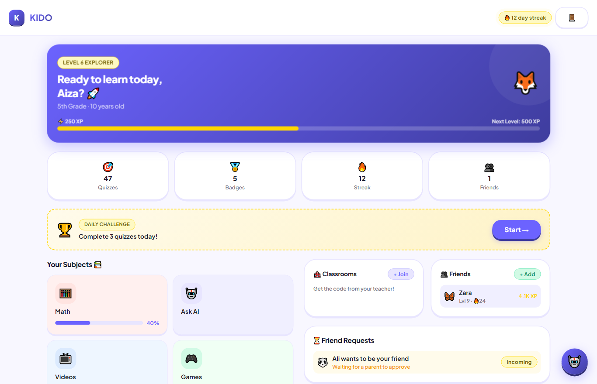
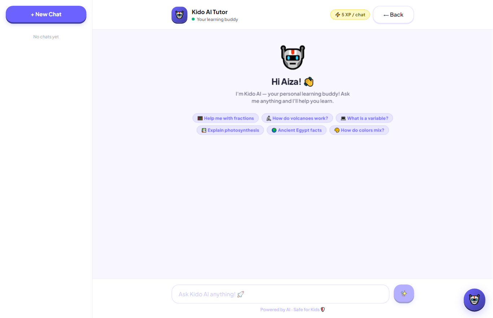
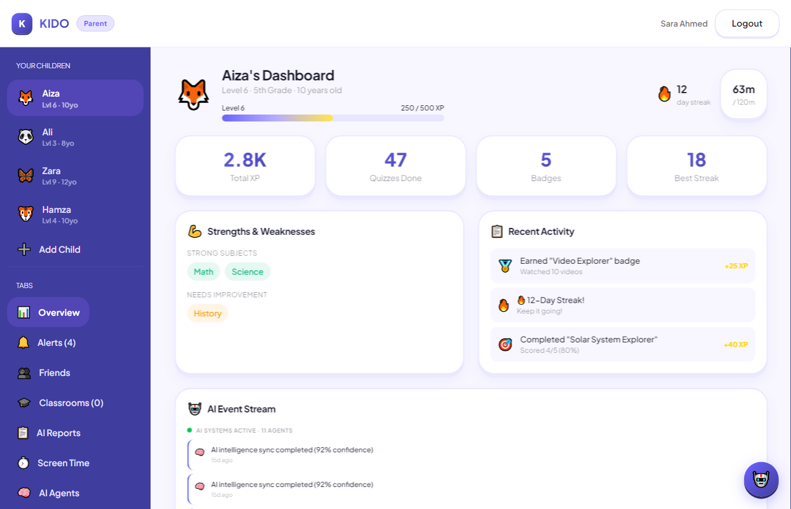
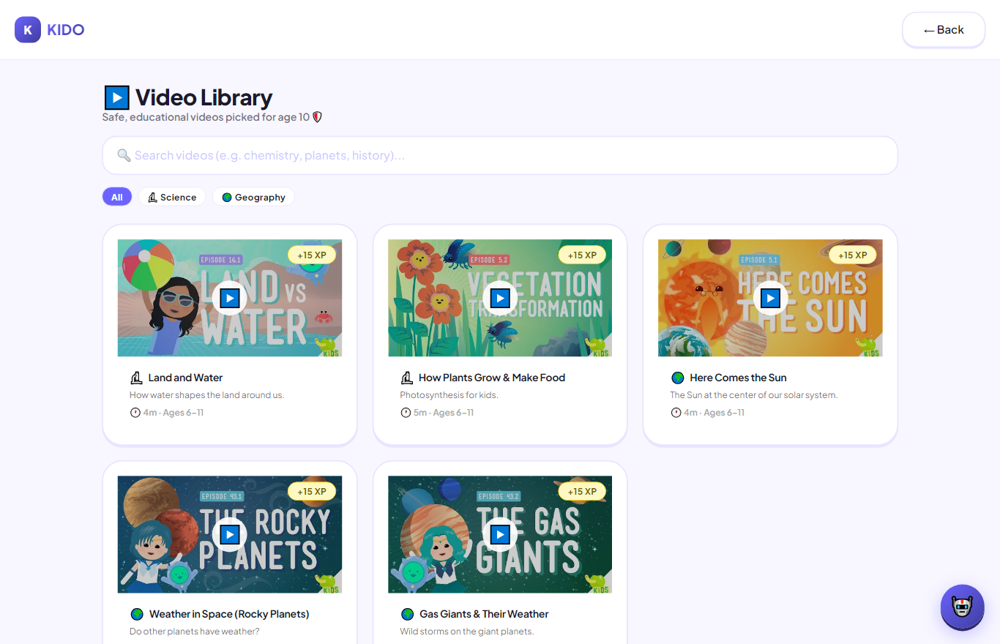
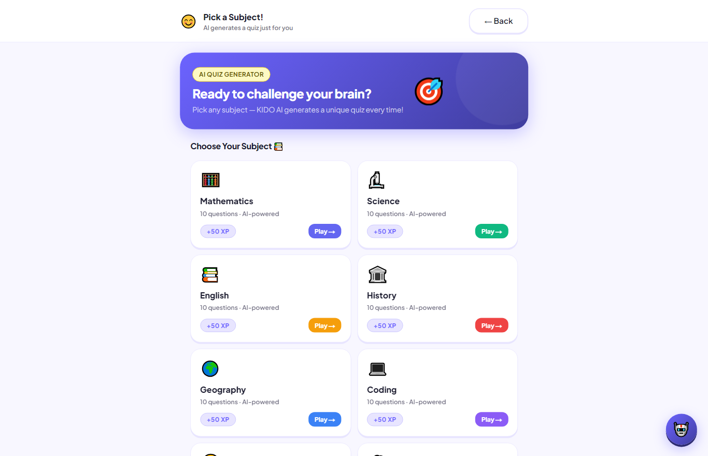
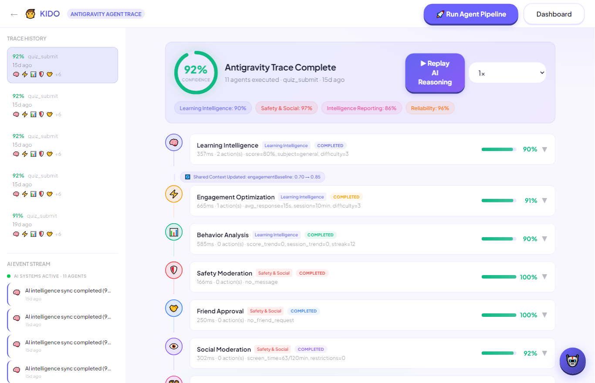
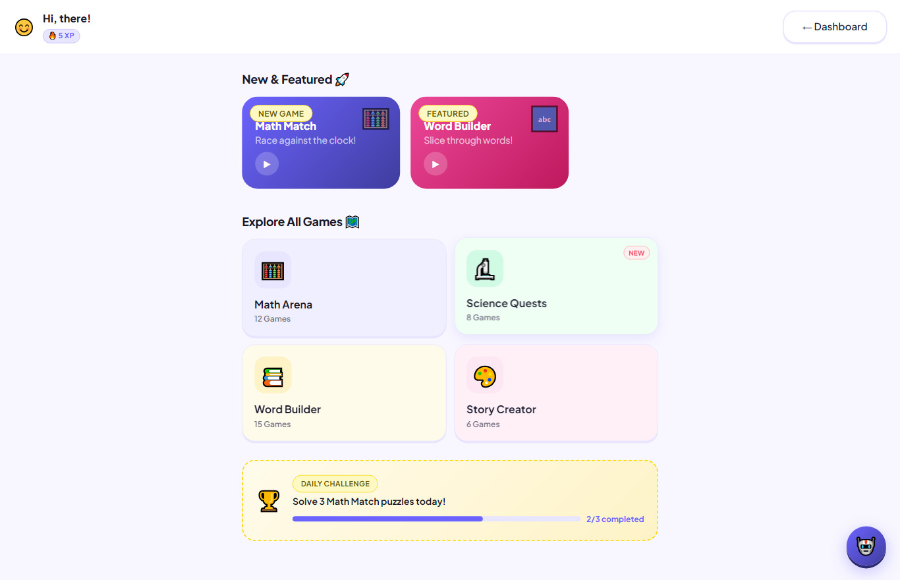
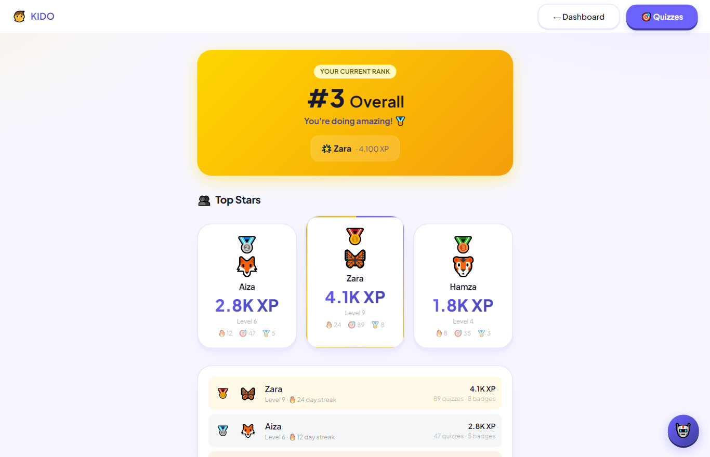

A Safe, Agentic AI Learning Ecosystem for Children
Final Project Report — Consolidated (Phases 1–8)
Live App: https://kido-orcin.vercel.app
Repository: https://github.com/FarhanRajputFelix/KIDO
Submitted by Team KIDO · bscs2312407@szabist.pk
KIDO is a production-grade, AI-powered learning ecosystem for children under 15. It combines gamified education (adaptive quizzes, AI-generated games, an age-restricted video library, and a conversational AI tutor) with a multi-agent reasoning pipeline that continuously analyzes a child's learning signals to support parents and teachers. The platform is built around the textbook's rational agent model and the beneficial-machine paradigm: every autonomous decision is bounded by verifiable parental consent, age-appropriate content gating, and privacy-by-design data minimization.
The system supports four roles — Parent, Child, Teacher, Admin — each with a dedicated dashboard, and is deployed as a responsive web app and an installable PWA / signed Android APK.
Children's digital products often optimize for engagement at the expense of safety and learning outcomes. KIDO reframes the problem as a rational agent acting in a partially observable, non-deterministic environment (the child's evolving knowledge state), with the goal of maximizing learning while provably respecting parental authority and child safety.
| Component | Specification |
|---|---|
| Performance Measure | Learning gain (quiz accuracy trend), engagement without burnout, streak retention, zero safety incidents, parent-approval compliance. |
| Environment | The child's knowledge state, activity history, social graph, screen-time — partially observable, dynamic, stochastic, sequential. |
| Actuators | Generate quiz/game/video recommendations, tutor responses, parent alerts, difficulty adaptation, friend/classroom approval gates. |
| Sensors | Quiz submissions & scores, response times, session length, watch logs, social messages, screen-time logs. |
| Element | Definition |
|---|---|
| State (s) | { child profile (age, grade, level, XP, streak), strong/weak subjects, recent quiz scores & trend, engagement metrics, screen-time, social context } |
| Actions (a) | { adapt difficulty, recommend content, tutor step-by-step, flag burnout, moderate message, request parent consent, raise insight alert } |
| Goal States (G) | Sustained positive learning trend + high engagement + no safety/contradiction flags + all social actions parent-approved. |
Targeting the under-15 demographic in Karachi (and globally), KIDO adopts a COPPA-style child-safety posture:
[ Browser / PWA / Android TWA ]
│ HTTPS
┌──────▼─────────────────────────────────────┐
│ Next.js 15 (App Router) │
│ • Server Components + Client UI │
│ • Route Handlers (/api/*) — the agents │
│ • NextAuth v5 (JWT) — role-based sessions │
└──────┬───────────────────────┬──────────────┘
│ Prisma ORM │ fetch
┌──────▼─────────┐ ┌────────▼───────────────┐
│ Neon Postgres │ │ AI Providers │
│ (users, child, │ │ • Groq (Llama-3.3-70B) │
│ quizzes, │ │ • Gemini 2.0 Flash (FB) │
│ agentTrace…) │ └─────────────────────────┘
└────────────────┘
| Layer | Technology | Why |
|---|---|---|
| Frontend | Next.js 15, React 19, Tailwind v4 | SSR + responsive PWA, single codebase for web + installable app. |
| Auth | NextAuth v5 (Credentials, JWT), bcrypt | Role-based sessions (parent/child/teacher/admin); optional email verification (Resend). |
| Database | Neon Postgres + Prisma ORM | Relational integrity for the learning graph; type-safe queries. |
| AI | Groq Llama-3.3-70B (primary), Gemini 2.0 Flash (fallback) | Free, fast inference with a resilient multi-provider fallback chain. |
| Agents | Custom 11-agent pipeline (src/lib/agents.ts) | ReAct-style reasoning, structured outputs, parent alerts. |
| Deploy | Vercel + PWA (service worker) + signed APK | Continuous deploy from GitHub; installable on phones. |
getAccessibleChild() guard applied to every child-scoped endpoint (parent owns child / teacher owns classroom / admin / child-self), preventing cross-account data access.On every meaningful event (e.g., a quiz submission) KIDO runs an orchestrated pipeline of specialized agents. Each agent follows a ReAct loop: it reasons over the shared context, acts (computes a verdict / calls the LLM), and writes a structured result with a confidence score to shared memory. A meta-layer detects contradictions and triggers recovery.
| # | Agent | Responsibility |
|---|---|---|
| 1 | Learning Analysis | Detects mastery vs. struggle; recommends next difficulty. |
| 2 | Engagement Optimization | Flags fatigue / optimal session length. |
| 3 | Behavior Analysis | Burnout-risk detection from response-time + session trends. |
| 4 | Safety Moderation | Screens social messages for unsafe content. |
| 5 | Friend Approval | Routes friend requests to parent consent. |
| 6 | Social Moderation | Governs peer interactions. |
| 7 | Parent Insight | Produces parent-facing alerts (e.g., learning-pace-slow). |
| 8 | Teacher Support | Aggregates class-level performance signals. |
| 9 | Progress Analytics | Computes trends, level/streak updates. |
| 10 | Contradiction Detection | Flags conflicting signals across agents. |
| 11 | Fallback Recovery | Guarantees a safe result if the LLM/quota fails. |
Every run is persisted as an AgentTrace (agent results, overall confidence, fallback/contradiction flags, final recommendations) — providing full explainability, visualized on the AI-pipeline page for parents/teachers.
A single provider-agnostic generator (generateText()) tries Groq first, then falls back to Gemini, then to curated content banks — so the app never hard-fails. LLM calls power:
| Feature | LLM Use | Fallback |
|---|---|---|
| AI Tutor (multi-session chat) | Personalized, step-by-step, age-tuned tutoring | Encouraging canned reply |
| Adaptive Quiz Generation | 5 age/grade-appropriate Q&A with explanations | Per-subject question bank |
| AI Games (word/story/math) | Unique puzzles per session | Curated challenge sets |
| Progress Reports | Narrative parent report w/ strengths & recommendations | Data-driven template report |
pendingStudentIds and a parent alert is raised → the child is enrolled only after parent approval. A teacher can never add a child unilaterally.A central getAccessibleChild() guard wraps all 11 child-scoped endpoints (chat, quiz, report, game, screen-time, friends, classroom, agent-trace). Any attempt to access another family's child returns 403 — eliminating the cross-account data leak.
Only learning-relevant data is stored; messaging is restricted to approved friends; child logins are provisioned by parents; no third-party behavioral tracking.
| Role | Capabilities |
|---|---|
| Child | Gamified dashboard (XP, level, streak, badges), AI Tutor (multi-session), adaptive quizzes, 3 AI games, age-restricted video library with search, friends & messaging (parent-gated), leaderboard. |
| Parent | Multi-child management, AI insight reports, alerts (burnout/safety/pace), friend & classroom approval, screen-time, AI-agent traces, add child + login. |
| Teacher | Create classrooms w/ shareable join codes, AI quiz generation per student, class performance analytics, enrolled/pending student tracking. |
| Admin | Platform stats, user/teacher/classroom oversight, top students. |








The team followed an iterative, Agile-style process across an 8-week prototype cycle, with continuous deployment from GitHub to Vercel and atomic, reviewable commits.
| Week | Phase | Deliverable (as implemented) |
|---|---|---|
| 1 | Problem Formulation | Seed maturity, PEAS, state/action/goal, task board. |
| 2 | Research & Context | Child-safety (COPPA-style) requirements, Karachi context. |
| 3 | Architecture | Agentic workflow design, data model, tool schema. |
| 4 | Backend Scaffold | Prisma schema, Neon DB, server-side authorization guard. |
| 5 | AI Integration | Groq/Gemini generator, tutor/quiz/game/report, agent pipeline. |
| 6 | Safety Engineering | Parental-consent flows, age gating, data isolation. |
| 7 | Beta Testing | Adversarial input tests, access-control tests, UX polish. |
| 8 | Final Submission | Deploy, PWA/APK, report, repo + README. |
| Team Member | Phase(s) | Primary Tasks |
|---|---|---|
| Farhan (Lead) | 1, 4 | AI architecture, agentic system, ML models, system design |
| Zubair Khan | 1, 2, 3 | Flutter UI, design system, screens, animations |
| Fahad | 2, 3, 4 | FastAPI backend, PostgreSQL, REST APIs, Docker |
| Syed Muhammad Asghar | 1, 6 | Documentation, research papers, final report, presentation |
| Chaudhary Saboor Munir | 5, 6 | Unit testing, integration testing, QA, deployment support |
| Principle | Implementation | Status |
|---|---|---|
| Beneficial / aligned | Agents bounded by parental authority & safety gates | ✔ |
| Child safety | Age-restricted content, message moderation, no ads | ✔ |
| Privacy by design | Data minimization, server-side isolation | ✔ |
| Transparency | Persisted, viewable agent traces (explainability) | ✔ |
| Robustness | Multi-provider + deterministic fallback | ✔ |
| Human oversight | Parent/teacher approval & insight dashboards | ✔ |
https://kido-orcin.vercel.app.